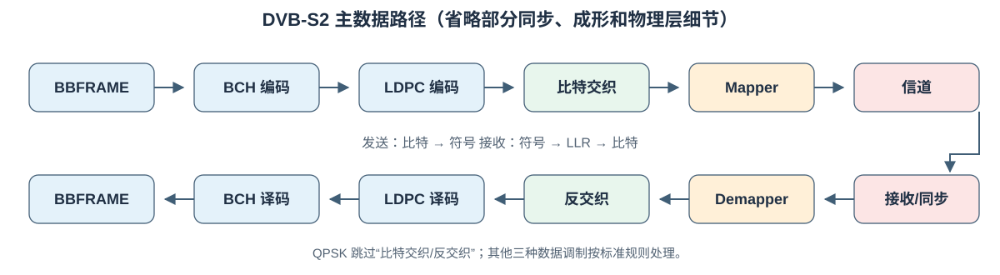
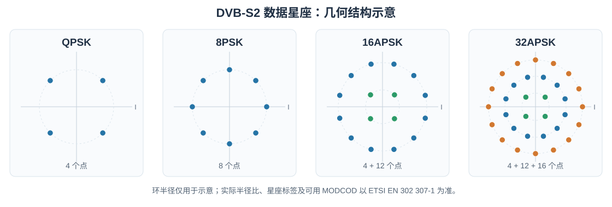
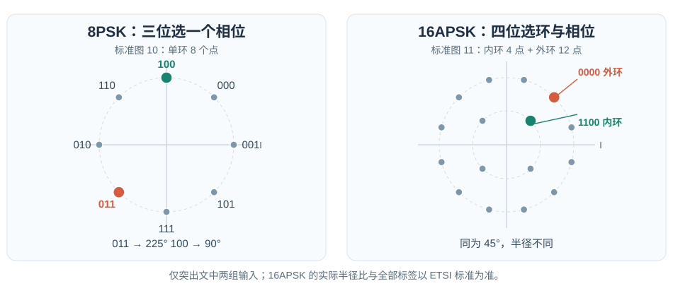

从零理解 DVB-S2 数字通信系统¶
本文从比特、概率和复数表示讲起，逐步走到星座映射、AWGN 信道、软解映射以及 DVB-S2 帧。读完后，应能沿着一帧数据回答三个问题：它在发送端变成了什么？接收端实际观测到了什么？接收端凭什么恢复原始比特？
本文以 ETSI EN 302 307-1 V1.4.1（DVB-S2） 为规范依据。为讲清原理而使用的简化数值模型会明确标注；这些模型不等于完整标准实现。
1. 先看全链路：比特怎样穿过卫星信道¶
业务数据（例如 MPEG-TS 包或通用数据流）
→ 模式适配/流适配 → BBFRAME（基带帧，含 BBHEADER）
→ BCH 外码 → LDPC 内码 → FECFRAME（纠错码字）
→ 位交织（部分调制方式）→ 星座 Mapper → XFECFRAME（复数数据符号）
→ PL 成帧（PLHEADER、可选导频）→ 脉冲成形 → 上变频/卫星信道
→ 下变频/同步/均衡 → 符号采样 → Demapper（硬判决或软 LLR）
→ 解交织 → LDPC 解码 → BCH 解码 → 去除基带帧包装 → 业务数据

这不是一条“发送端直接把 0/1 变成无线电波，接收端再读回 0/1”的管道。纠错编码会添加冗余；Mapper 把若干编码比特变为一个复数符号；信道使符号偏移；Demapper 必须把一个有噪声的坐标转换成对各个比特的判断及其可信程度。标准第 4.2 节的系统框图可与上图对照。
先固定术语：调制决定一个符号可取的理想坐标；编码添加用于纠错的结构；成帧规定边界、信令和导频；脉冲成形决定符号序列如何成为连续时间波形。它们解决不同问题，不要混为一谈。
2. 从比特到符号¶
一个比特只有 0 或 1。一个符号是在一个符号时刻发送的某种可区分状态。假设有 \(M\) 个状态，而且每个状态对应一个长度相同的二进制标签，那么需要 \(m\) 个比特选出一个状态。因为一个比特有 2 种取值，\(m\) 个比特有 \(2^m\) 种组合，所以
这里 \(\log_2 M\) 是“2 的几次方等于 \(M\)”。例如 QPSK 有 4 个状态，每个符号标 2 比特；8PSK 有 8 个状态，标 3 比特；16APSK、32APSK 分别标 4、5 比特。这里的“每符号比特数”是映射器输入端的编码比特数，不等于用户业务的净比特数。若发送符号率为 \(R_s\) 符号/秒，未考虑纠错和帧开销时，Mapper 消耗编码比特的速率是 \(mR_s\) 比特/秒。真实业务速率还要扣除纠错冗余、帧头、导频和适配开销。
一个最小例子：QPSK 的两个输入比特为 10，Mapper 查表输出一个复数点；下一组 01 再输出另一个点。接收机观测的并不是干净的 10 或 01，而是被信道扰动的点坐标。
3. 为什么用复数表示无线电信号¶
3.1 I、Q 是平面坐标，不是两根天线¶
在纸上画横轴 \(I\)（同相）、纵轴 \(Q\)（正交），一个点可写作 \((I,Q)\)。复数只是把这对实数紧凑地记为
这里 \(j\) 是工程中常用的虚数单位，\(I\) 和 \(Q\) 仍是可测的实数。点到原点的距离（幅度）为 \(|s|=\sqrt{I^2+Q^2}\)；点相对于横轴的角度是相位。I=0.8, Q=0.2 表示“向右 0.8、向上 0.2”，不要求真实电压含有一个神秘的“虚数部分”。
为什么能用两个坐标？固定载波频率 \(f_c\) 时，余弦和相差四分之一周期的正弦可作为两种彼此独立的波形基底。一个简化的实射频信号是
\(t\) 是时间，\(f_c\) 单位为 Hz；\(\cos\)、\(\sin\) 的自变量是角度（弧度），\(2\pi f_ct\) 是载波相位。接收端用相应的载波参考做下变频，才重新得到 I/Q。上式的负号是常见约定；实现中若整体约定一致，也会看到其他符号习惯。
复基带指只保留缓慢变化的 \(I(t)+jQ(t)\)，暂不写高速载波。星座图画的是符号采样时刻的复基带值，而非空中电磁波的形状。实践中符号还会经过脉冲成形，故连续时间的 \(I(t),Q(t)\) 不会简单地在符号边界突变。
3.2 星座图与距离¶
星座是允许发送的理想复数点集合。接收点 \(y\) 与候选点 \(s\) 的欧几里得距离为
这就是平面勾股定理。距离平方 \(|y-s|^2\) 不开根号，比较大小时结果相同，后面的高斯似然也恰好使用它。

图用于理解几何位置，并非完整的标准比特标签表。BPSK 的教学模型可设 0 → +1、1 → -1。BPSK 只换左右相位。PSK 的点围绕同一圆，主要靠相位区分；APSK 的点还分布在不同半径的环上，同时利用幅度与相位。DVB-S2 的 16APSK 有内环 4 点和外环 12 点，32APSK 有三环 4、12、16 点；环半径比依 MODCOD 而变，不能把一张示意图当作所有模式的坐标表。标准第 5.4 节的映射图给出实际约定。
下面这张图进一步标出 8PSK 和 16APSK 的比特标签；读标签时要同时看点的位置，而不只是看环的形状。

3.3 QPSK 的完整小表与 Gray 相邻关系¶
令 \(a=1/\sqrt{2}\approx0.7071\)。如此每个 QPSK 点的能量 \(|s|^2=a^2+a^2=1\)，便于不同方案比较。按 DVB-S2 的 QPSK 图，坐标与标签可写为：
| 标签 \(b_Ib_Q\) | 理想点 \(s\) | 象限 |
|---|---|---|
00 |
\(+a+ja\) | 右上 |
01 |
\(+a-ja\) | 右下 |
10 |
\(-a+ja\) | 左上 |
11 |
\(-a-ja\) | 左下 |
因此第一个比特由 I 的正负区分，第二个比特由 Q 的正负区分。沿圆周走向相邻点，只翻转一个比特，这就是 Gray 标记 的核心作用：噪声让点越过最近的边界时，通常只错一位，而不是两位。Gray 标记不能消灭误码，也不表示所有 PSK/APSK 模式都能按同一套简单的笛卡尔规则标号。8PSK 的具体标签及 16/32APSK 的具体映射须遵循标准相应图表。
4. 接收判决前，先补概率论¶
4.1 事件、条件概率和随机变量¶
事件的概率 \(P(A)\) 是它发生的可能性，介于 0 和 1。若已知道事件 \(B\) 发生，则
\(A\cap B\) 表示二者同时发生。若投一颗公平骰子，\(A\) 是“点数为偶数”，\(B\) 是“点数大于 3”，则 \(P(B)=3/6\)，\(P(A\cap B)=2/6\)，所以 \(P(A\mid B)=2/3\)。条件信息会改变概率。
随机变量是实验结果对应的数值。例如发送的是哪个离散星座点 \(S\)，或噪声的某个实数坐标 \(N_I\)。离散 \(S\) 可给每个值分配概率 \(P(S=s)\)；连续 \(N_I\) 则通常使用概率密度 \(f_{N_I}(u)\)。密度值本身不是“恰好等于 \(u\)”的概率；区间概率是密度曲线下面积：
\(\int\) 可理解为把非常窄的小区间的“宽度 × 高度”加起来。连续变量恰好落在单个无限精确数上的概率通常为 0，但其密度可以大于 0，甚至大于 1。
独立意味着知道一个变量的结果不改变另一个变量的分布。若 I、Q 噪声独立，联合密度就是两项密度的乘积。此假设很重要，并非所有实际射频失真都满足它。
4.2 高斯噪声、均值、方差¶
均值（期望）是长期平均值，记 \(E[N_I]\)；方差 \(E[(N_I-E[N_I])^2]\) 衡量围绕均值的平方偏离。零均值、方差 \(\sigma^2\) 的高斯实变量，其密度为
\(\sigma\) 是标准差，\(\exp(z)=e^z\)，\(e\approx2.71828\)。距离零越远，负指数越小，因此大噪声较少见。分母使整条曲线下的面积等于 1。\(\pi\) 是圆周率。方差越大，曲线越宽，接收点通常散得越远。
这里的 AWGN 意为加性白高斯噪声：加性指噪声加到信号上；高斯指其统计分布；白指在所考虑频带内噪声谱近似平坦。我们先在接收机完成匹配滤波和定时采样后的离散复数符号模型讨论它；这不等于说实际卫星链路只有 AWGN，放大器非线性、相位噪声、衰落和同步误差另需处理。
4.3 似然、后验与对数¶
接收后看到 \(y\)，想反推发送点 \(s\)。\(p(y\mid s)\) 是假设发送了 \(s\) 时，观测 \(y\) 的密度，称似然；\(P(s\mid y)\) 是已经观测到 \(y\) 后，发送 \(s\) 的概率，称后验。二者的条件方向不同。贝叶斯公式把它们联系起来：
\(\mathcal S\) 是所有可能星座点；分母是在所有候选发送点上求和，保证后验和为 1。若各点先验概率相等，比较后验大小等价于比较似然大小。对数 \(\ln\) 是自然指数 \(\exp\) 的反运算；因其单调递增，比较正数 \(A\) 与 \(B\) 的大小，也可比较 \(\ln A\) 与 \(\ln B\)。概率连乘变对数相加，数值计算更稳定，这正是 LLR 使用对数的原因。
5. AWGN 下，接收机为什么看距离¶
5.1 从两个实高斯噪声到复数似然¶
令发送符号 \(s=s_I+js_Q\)，接收采样 \(y=s+n\)，其中 \(n=n_I+jn_Q\)。假定 \(n_I,n_Q\) 独立、各为零均值高斯且方差均为 \(\sigma^2\)。于是 \(y_I-s_I=n_I\)、\(y_Q-s_Q=n_Q\)。由独立性，两维条件密度是两项一维密度之积：
其中在本文的符号采样归一化约定下，\(N_0=2\sigma^2=E[|n|^2]\)。有些资料用连续时间的单边/双边功率谱密度解释 \(N_0\)，其因子约定会不同；套公式前必须先对齐定义。
负指数只取决于距离平方：\(y\) 离某理想点越近，在该点被发送的假设下越“常见”。若各星座点等先验，则最大似然判决
\(\arg\max\) 表示“找出让表达式最大的那个候选值”；\(\arg\min\) 类似。若各点先验不相等，最大后验判决应最大化 \(p(y\mid s)P(S=s)\)，未必就是最近点。若实际噪声非独立、非圆对称高斯，简单欧几里得最近点规则也可能不是最优。
5.2 一个 BPSK 概率小例子¶
仍采用教学映射 0 → +1, 1 → -1，实噪声标准差 \(\sigma=0.5\)，观测 \(y=0.2\)。到 +1 与 -1 的平方距离分别为 \(0.64\)、\(1.44\)。高斯指数分别为 \(-0.64/(2\cdot0.25)=-1.28\) 和 \(-1.44/(2\cdot0.25)=-2.88\)；两个密度的共同前因子可约掉。因此似然比为 \(e^{-1.28}/e^{-2.88}=e^{1.60}\approx4.95\)。等先验时，0 的后验概率是 \(4.95/(1+4.95)\approx0.832\)，1 约 \(0.168\)。硬判决只给 0；软信息还保留“约 83% 对 17%”的区别。
6. Mapper 的逆向工作：Demapper 与 LLR¶
6.1 硬判决不是软判决¶
Mapper 输入 \(m\) 位、输出一个理想点。Demapper 输入有噪声的 \(y\)，可以输出：
- 硬判决：选最近的一个理想点，再取其 \(m\) 位标签。例如
00，但不说明点离判决边界有多近。 - 软判决：对每一位给一个实数，描述该位更像
0还是1，以及可信程度。LDPC 解码特别依赖这种软信息。
对位 \(b_k\)，本文采用“正数支持 0”的 LLR 约定：
\(L_k=0\) 表示两者同样可能；\(L_k>0\) 偏向 0，\(L_k<0\) 偏向 1；\(|L_k|\) 越大越有把握。例如 \(L=\ln 9\approx2.197\) 意味着 0 对 1 的后验赔率为 9:1，即 \(P(0\mid y)=0.9\)。有的实现定义相反的 LLR，符号也就反转；对接解码器时必须统一。
设 \(\mathcal S_{k,0}\) 为第 \(k\) 位标签为 0 的星座点集合，\(\mathcal S_{k,1}\) 类似。若各点等先验，代入贝叶斯公式并约去公共分母，就得到精确 AWGN 位 LLR：
此式并非“先选最近点再给它的每位编一个置信度”，而是在两组候选点的似然之间比较。若点先验不均匀，求和项应分别乘 \(P(S=s)\)，不能直接使用上面的等先验简式。
当噪声较小、每组主要由最近的点贡献时，可用 max-log 近似：
其来源是 \(\ln\sum_i e^{a_i}\approx\max_i a_i\)；这一步丢掉了其他候选点的贡献，因此是近似，而非恒等式。工程实现常结合数值稳定的 log-sum-exp、查表、裁剪和量化。
6.2 完整 QPSK 数值例子¶
使用上面的 DVB-S2 QPSK 标签，\(a\approx0.7071\)。令接收点 \(y=0.8+j0.2\)，每个实维噪声方差 \(\sigma^2=0.25\)，故 \(N_0=0.5\)。逐点计算平方距离：
| 候选标签 | 候选点 | \(|y-s|^2\)（约） |
| --- | --- | ---: |
| 00 | \(+a+ja\) | \(0.266\) |
| 01 | \(+a-ja\) | \(0.831\) |
| 10 | \(-a+ja\) | \(2.529\) |
| 11 | \(-a-ja\) | \(3.094\) |
例如 00 的计算是 \((0.8-0.7071)^2+(0.2-0.7071)^2\approx0.266\)。最近点是 00，所以硬判决为 00。但是两位的把握程度不同：I 方向离分界线 \(I=0\) 更远，第一位更可靠。
由于 QPSK 这张表的第一位只由 I 的符号决定、第二位只由 Q 的符号决定，各 LLR 的求和可消去另一维共同因子。直接展开两个高斯指数之比可得
所以第一位为 0 的后验概率为 \(e^{4.53}/(1+e^{4.53})\approx0.989\)，第二位为 0 的后验概率为 \(e^{1.13}/(1+e^{1.13})\approx0.756\)。两位硬判决都是 0，但可信度明显不同。一般 8PSK/APSK 几何与标签并不这样按 I/Q 分离，应使用对候选点集合求和的通式。
7. 为什么纠错编码需要位交织和软信息¶
7.1 冗余的直觉¶
若将一位重复三次，例如 1 → 111，接收 101 时可以多数投票猜回 1；代价是传 3 位才携带 1 位信息。真正的 FEC 不只是重复，而是根据多位之间的约束引入有结构的冗余。例如简单偶校验位 \(p=b_1\oplus b_2\)，其中 \(\oplus\) 表示异或（相同为 0，不同为 1）；收到三个数后可以检查约束是否满足，但单个校验通常还不足以定位并修复所有错误。
码率 \(R=K/N\)：\(K\) 个输入位编码为 \(N\) 个输出位，\(N-K\) 是冗余位。码率越低，冗余通常越多，但并非仅凭码率就能判断纠错性能。DVB-S2 先用 BCH 外码，再用 LDPC 内码；接收侧顺序相反。LDPC 利用大量稀疏校验约束和软 LLR 迭代推断比特，BCH 外码帮助清除剩余错误。标准第 5.3 节的 FECFRAME 定义与参数表给出具体长度。
这里要分清两个数字：3/5 是某种 LDPC 内码率，不是业务有效载荷占整条卫星帧的精确比例；BBHEADER、BCH 校验、PLHEADER、导频等还会消耗位置。
7.2 位交织改变顺序，不增加信息¶
交织是一种可逆置换。演示用 12 位按行写入 3 行 4 列：
原始序列： 0 1 2 3 4 5 6 7 8 9 A B
写成矩阵： 0 1 2 3
4 5 6 7
8 9 A B
按列读出： 0 4 8 1 5 9 2 6 A 3 7 B
数字/字母是位置标签，不是实际比特值。接收端用逆置换把每个软值放回原编码位位置。交织的目的不是凭空增加冗余，而是调整编码位在调制标签上的位置，改善不同比特位可靠性与纠错码之间的配合。DVB-S2 的位交织不是所有调制方式都有：标准第 5.3.3 节规定了 8PSK、16APSK、32APSK 的交织，QPSK 不走这套位交织；8PSK 的 3/5 模式还有特殊的列读取顺序。真实矩阵尺寸、读写方向应按 标准第 5.3.3 节及表 8实现，不能照抄上面的玩具矩阵。
从解码器视角，Demapper 输出的是按调制标签顺序排列的 LLR；解交织恢复LDPC 编码位顺序，否则即使每个 LLR 的正负号都正确，校验约束仍会接错位置。
8. DVB-S2 的帧、MODCOD 与实际传输¶
8.1 四个容易混淆的名字¶
| 名称 | 在链路上的位置 | 包含什么、用什么单位 |
|---|---|---|
| BBFRAME | 适配后、BCH 前 | BBHEADER（80 位）和数据字段组成的 \(K_{\rm bch}\) 位基带帧 |
| FECFRAME | BCH、LDPC 后 | 长帧 \(N_{\rm ldpc}=64800\) 位或短帧 \(16200\) 位的纠错码字 |
| XFECFRAME | 交织、Mapper 后 | \(N_{\rm ldpc}/m\) 个复数数据符号 |
| PLFRAME | 物理层成帧后 | PLHEADER、数据符号和可选导频组成的传输帧 |
业务流可以是连续流，不意味着“一个业务包 = 一个 BBFRAME”。模式适配负责流标识、同步/包装等；80 位 BBHEADER 告诉接收机如何解释后续数据字段。BBFRAME 进入外码 BCH、内码 LDPC。Mapper 的数据输出称 XFECFRAME，再由 PL 成帧器加物理层头和导频。PLHEADER 不要和 BBHEADER 混淆：前者服务于物理层识别帧和模式，后者描述基带数据。标准第 5.1–5.2 节与第 5.5 节分别定义这些部分。
8.2 MODCOD 决定什么¶
MODCOD 是调制方式与纠错码率的组合，例如 8PSK 3/5。接收机必须知道当前帧应按哪个星座和 FEC 参数来解码。DVB-S2 的 90 符号 PLHEADER 由 26 符号的 SOF（帧起始标识）及 64 符号的 PLS（物理层信令）构成；其调制使用 \(\pi/2\)-BPSK，与后续数据区选用的 QPSK/8PSK/APSK 不是同一回事。PLS 表示 MODCOD 与 TYPE；TYPE 指示长/短 FECFRAME 及导频使用情况。标准表 12 给出 MODCOD 编码，例如 8PSK 3/5 对应 MODCOD 值 12。参见 PLHEADER 与 MODCOD 表。
CCM（固定编码调制）长期使用同一模式；VCM/ACM 可按帧改变模式，以适应业务或链路条件。“自适应”不表示同一帧内每个符号随意换星座：接收端要先读取该帧的 PL 信令，再按帧模式处理数据。
8.3 导频、脉冲成形与真实接收机¶
数据区按 90 个数据符号为一个 slot 分组。启用导频时，按标准规定的间隔插入每组 36 个导频符号，用于载波同步等；导频本身不携带用户数据。发端后续的平方根升余弦（SRRC）脉冲成形限制带宽并控制符号间干扰；DVB-S2 规定滚降系数 \(\alpha=0.35,0.25,0.20\)。直观地说，\(\alpha\) 越小，在同一符号率下理论占用频带越窄，但实际系统对滤波器、同步和链路非理想因素仍有要求。标准第 5.5–5.6 节定义 PL 成帧和基带成形。
实际接收机不能直接把 ADC 样本送进上面的 \(y=s+n\) 公式。它先要做频率/相位恢复、定时同步、匹配滤波、帧同步，并根据需要补偿信道与射频失真。只有在正确的采样时刻、正确的幅度和相位参考下，星座上的点才有可比较的距离。导频和 PLHEADER 也是让这一过程可行的关键结构。
9. 把数字算到底：正常帧 8PSK 3/5¶
选 DVB-S2 正常 FECFRAME、8PSK 3/5、启用导频。由标准正常帧参数表，该模式 \(K_{\rm bch}=38688\) 位，BCH 输出 \(N_{\rm bch}=K_{\rm ldpc}=38880\) 位，LDPC 输出 \(N_{\rm ldpc}=64800\) 位。于是：
- BBFRAME 为 38688 位，其中 BBHEADER 80 位，因此在数据字段填满且不计更上层开销时最多承载 \(38688-80=38608\) 数据字段位。
- BCH 增加 \(38880-38688=192\) 校验位；LDPC 再增加 \(64800-38880=25920\) 校验位。LDPC 内码率确为 \(38880/64800=3/5\)。
- 位交织只重排 64800 位；8PSK 每符号放 3 位，因此 XFECFRAME 有 \(64800/3=21600\) 个数据符号。
- 每 slot 90 个数据符号，数据区有 \(21600/90=240\) 个 slot。PLHEADER 另占 90 个符号。
- 按标准“每 16 个 slot 后插入，且最后一个数据 slot 后不插入”规则，导频块数为 \(\lfloor(240-1)/16\rfloor=14\)，每块 36 个符号，共 \(14\times36=504\) 个导频符号。\(\lfloor x\rfloor\) 表示不大于 \(x\) 的最大整数。
- PLFRAME 总计 \(90+21600+504=22194\) 个符号。不启用导频则为 \(21690\) 个符号。
按“每个 PLFRAME 的数据字段位 / PLFRAME 符号数”这个理想化口径，启用导频时为 \(38608/22194\approx1.740\) 位/PL 符号；不能把它直接叫做用户净吞吐率。实际业务吞吐还受基带填充、上层封装、帧间处理、物理层传输与符号率等影响。若仅为了量级感取 \(R_s=10\) Msymbol/s，上述口径约为 17.40 Mbit/s；它仍不是对任何具体业务链路的保证值。相关帧长、MODCOD、slot、导频规则见 ETSI 第 5.3–5.5 节。
这个例子串起了整条链：38608 个填满的数据字段位并非直接按 3 位一组发送；它们先和 80 位基带头一起经过 BCH/LDPC 变成 64800 个编码位，重排后映射为 21600 个 8PSK 数据点，再加 PLHEADER 和导频，最后才经脉冲成形发射。
10. 常见误区与回看路线¶
| 容易产生的想法 | 更准确的说法 |
|---|---|
| “一个符号就是一个比特” | QPSK/8PSK/16APSK/32APSK 分别每数据符号承载 2/3/4/5 个编码比特。 |
| “I、Q 是两个不同的无线信道” | 它们是同一复基带信号的两个正交实坐标。 |
| “星座点最接近哪个就能得到可靠的比特” | 最近点给硬判决；点到决策边界的距离及噪声方差还决定软置信度。 |
| “概率密度 \(p(y\mid s)\) 就是发了 \(s\) 的概率” | 前者是观测似然密度；后者需要结合先验，求后验 \(P(s\mid y)\)。 |
| “LLR 正数一定代表 1” | 符号由定义决定；本文规定正数支持 0。 |
| “8PSK 3/5 每符号都有 \(3\times3/5\) 个业务位” | 这仅近似考虑 LDPC 码率，漏掉 BCH、BB/PL 头、导频及填充等。 |
| “交织会增加纠错冗余” | 交织只重排位置；冗余由编码产生。QPSK 在 DVB-S2 中不使用该位交织。 |
| “PLHEADER 与 BBHEADER 是同一个头” | 一个是物理层帧同步/模式信令，一个描述基带帧数据。 |
| “信道只有 AWGN，解调只要算距离” | AWGN 是理解与设计的重要基线模型；实际还需同步、滤波和处理非线性等。 |
再读整条链时，可以只问三个连续问题：当前对象的单位是位、复符号，还是连续波形？当前步骤在增加冗余、重排、映射、包装，还是估计概率？接收侧靠哪一项信息做逆操作？ 分清单位、概率条件方向与帧层次之后，Mapper、Demapper、LLR、FECFRAME、MODCOD 就不再是互不相干的术语。
规范入口¶
- ETSI EN 302 307-1 V1.4.1：DVB-S2 总规范。优先核对第 4.2 节系统框图、第 5.3 节 FEC/交织、第 5.4 节星座映射、第 5.5 节 PL 成帧以及第 5.6 节脉冲成形。